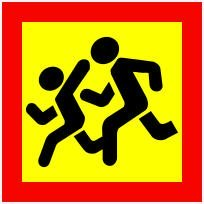

21.1. Дозволяється перевозити пасажирів у транспортному засобі обладнаному місцями для сидіння в кількості, що передбачена технічною характеристикою так, щоб вони не заважали водієві керувати транспортним засобом і не обмежували оглядовість, відповідно до правил перевезення.
21.2. Водіям маршрутних транспортних засобів забороняється під час перевезення пасажирів розмовляти з ними, їсти, пити, палити, а також перевозити пасажирів і вантаж у кабіні, якщо вона відокремлена від салону.
21.3. Перевезення автобусом (мікроавтобусом) організованої групи дітей здійснюється за умови обов’язкового проведення інструктажу з дітьми та супровідниками щодо правил безпечної поведінки під час руху та дій у разі виникнення аварійно-небезпечних ситуацій чи скоєння дорожньо-транспортної пригоди. При цьому спереду і ззаду автобуса (мікроавтобуса) обов’язково встановлюється згідно з вимогами підпункту “в” пункту 30.3 цих Правил розпізнавальний знак “Діти”.
Водій автобуса (мікроавтобуса), який здійснює перевезення організованих груп дітей, повинен мати стаж водія не менше 5 років і посвідчення водія категорії “D”.
На транспортному засобі з розпізнавальним знаком “Діти” під час посадки (висадки) до (з) нього пасажирів повинні бути увімкнені проблискові маячки оранжевого кольору та (або) аварійна світлова сигналізація.

Знак «Діти»
21.4. Водію забороняється починати рух до повного зачинення дверей та відчиняти їх до зупинки транспортного засобу.
21.5. Перевезення пасажирів (до 8 чоловік, крім водія) у пристосованому для цього вантажному автомобілі дозволяється водіям, які мають стаж керування транспортним засобом більше трьох років і посвідчення водія категорії “С”, а у разі перевезення понад зазначену кількість (включаючи пасажирів у кабіні) – категорій “С” і “D”.
21.6. Вантажний автомобіль, що використовується для перевезення пасажирів, повинен бути обладнаний сидіннями, закріпленими в кузові на відстані не менш як 0,3 м від верхнього краю борту і 0,3-0,5 м від підлоги. Сидіння, що розташовані вздовж заднього або бокового борту, повинні мати міцні спинки.
21.7. Кількість пасажирів, які перевозяться в кузові вантажного автомобіля, не повинна перевищувати кількості обладнаних для сидіння місць.
21.8. Військовослужбовці строкової служби, які мають посвідчення водія транспортного засобу категорії “С”, допускаються до перевезення пасажирів у кузові пристосованого для цього вантажного автомобіля згідно з кількістю обладнаних для сидіння місць після проходження спеціальної підготовки і стажування протягом 6 місяців.
21.9. Перед поїздкою водій вантажного автомобіля повинен проінструктувати пасажирів про їх обов’язки та правила посадки, висадки, розміщення і поведінки в кузові.
Починати рух можна, лише переконавшись, що створено умови для безпечного перевезення пасажирів.
21.10. Проїзд у кузові вантажного автомобіля, не обладнаного для перевезення пасажирів, дозволяється лише особам, які супроводжують вантаж або їдуть за ним, за умови, що вони забезпечені місцями для сидіння, розташованими згідно з вимогами пункту 21.5 цих Правил і техніки безпеки. Кількість пасажирів у кузові та кабіні не повинна перевищувати 8 чоловік.
21.11. Забороняється перевозити:
а) пасажирів поза кабіною автомобіля (крім передбачених цими Правилами випадків перевезення пасажирів у кузові вантажного автомобіля з бортовою платформою або в кузові-фургоні, призначених для перевезення пасажирів), у кузові автомобіля-самоскида, трактора, інших самохідних машин, на вантажному причепі, напівпричепі, в причепі-дачі, в кузові вантажного мотоцикла;
б) дітей, зріст яких менше 145 см або тих, що не досягли 12-річного віку, – у транспортних засобах, обладнаних ременями безпеки, без використання спеціальних засобів, що дають змогу пристебнути дитину за допомогою ременів безпеки, передбачених конструкцією цього транспортного засобу; на передньому сидінні легкового автомобіля – без використання зазначених спеціальних засобів; на задньому сидінні мотоцикла та мопеда;
в) дітей до 16-річного віку в кузові будь-якого вантажного автомобіля;
г) організовані групи дітей у темну пору доби.